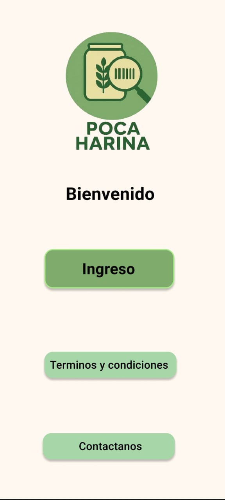
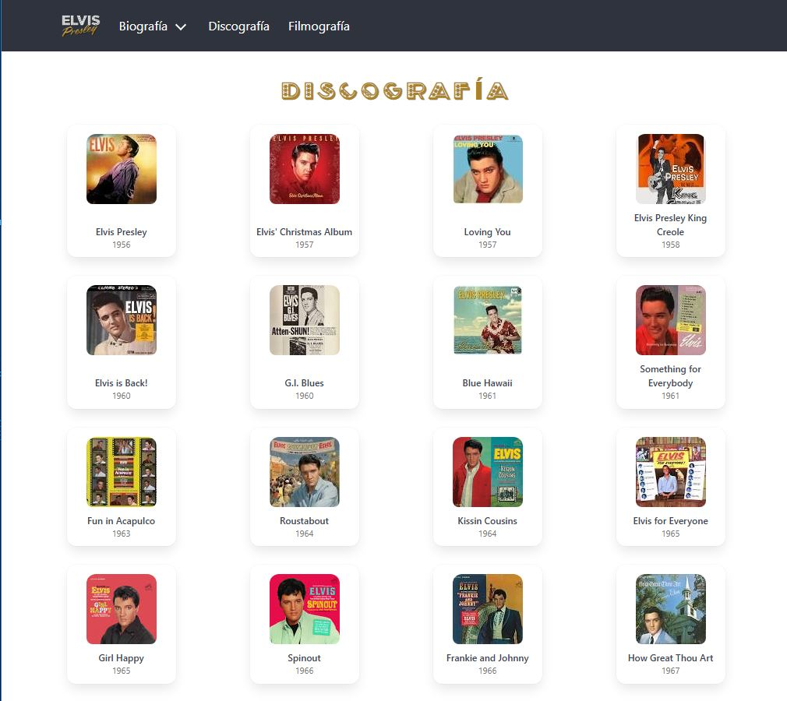

Especializada en crear experiencias digitales intuitivas, accesibles y libres de errores. De la idea al prototipo, asegurando la calidad en cada pixel.
Diseño de una herramienta digital para la identificación de gluten y alérgenos mediante escaneo de barras, dirigida para personas que buscan reducir el consumo de harinas y gluten sin complicaciones.

Enciclopedia digital que recorre la carrera de Elvis Presley. Construida con Bulma CSS, gestionando una interfaz limpia para una base de datos visual de gran volumen.

Mi camino profesional ha estado marcado por una constante búsqueda de la . Tras años de experiencia en el área de Recursos Humanos y Liquidación de Haberes, desarrollé una mirada analítica capaz de detectar inconsistencias donde otros solo ven datos. Hoy aplico esa misma habilidad en mi rol como QA Tester.
Entiendo que, al igual que en un recibo de sueldo, en el software cada detalle cuenta. Mi transición del diseño UX/UI al testing nace de una misma motivación: la obsesión por la calidad. No solo busco que un producto sea visualmente atractivo, sino que también sea robusto, confiable y libre de fallos.
Mi mayor “feature” es la combinación de experiencia profesional, resiliencia y una curiosidad constante por las nuevas tecnologías. Hoy busco aportar mi mirada analítica a equipos que valoren tanto la experiencia como la excelencia técnica.